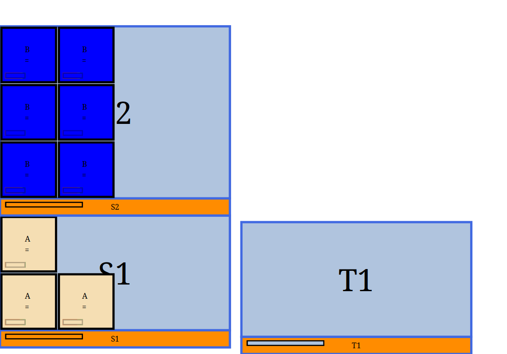

WarehousePlanner
WarehousePlanner is a tool designed to describe and display the layout of a warehouse , focusing on where and how boxes are positionned within shelfves. A warehouse is described using one or more text files and the tool can generate reports or visually display the warehouse as interactive terminal application or generate images.
Features
Define warehouses with structured file formats.
Import and manage boxes and shelves separately.
Language to move and rearrange boxes.
Different strategy to “fill” shelves with boxes.
Aggregate multiple files into one using Org-mode.
Utilize WPL for expressive warehouse descriptions.
Generate reports for warehouse analysis.
Display warehouse layouts with Brick.
Generate images with different styling.
Example
A simple warehouse containing three shelves in two bays, with some boxes.
This is a orgmode file. Each orgmode drawer contains a csv.
What is between drawer (as the present text is ignored)
The first drawer describes three shelves named respectively S1 , S2 and T1
:SHELVES:
name,comment,length,width,height,type
S1,,200,50,100,Shelf
S2,,200,50,150,Shelf
T1,,200,50,100,Shelf
:END:
The second drawer describes the boxes and in which shelf they are.
We have three boxes (called A) in S1 and six Bs in S2.
B have been tagged as `bg=blue` to set the background in blue.
:STOCKTAKE:
Bay No,Style,QTY,Length,Width,Height,Orientations
S1,A,3,50,50,50,
S2,B#bg=blue,6,50,50,50,
:END:
Finally, we need to describe the layout (how are shelves related to each other).
We want S2 to be on top of S1 and T1 next to it
:LAYOUT:
S1|S2 T1
:END:
Can be viewed as
{kind=link}
Boxes can be then moved by adding
The move section allows to move all the B to S1 and T1.
:MOVES:
boxes,location
B,S1|T1
:END:
{kind=link}
Todo
link to import section
(The original entry is located in /home/max/devel/warehouse-planner/doc/source/usage.rst, line 48.)
Todo
add reference to whp –help
(The original entry is located in /home/max/devel/warehouse-planner/doc/source/usage.rst, line 91.)
Todo
Structure files
brick
Reference: alphabetically sorted
advanced topic? (regroup selector tags etc …)
(The original entry is located in /home/max/devel/warehouse-planner/doc/source/index.rst, line 21.)
Todo
pmode
(The original entry is located in ../src/WarehousePlanner/WPL/Parser.hs, line 19.)
Todo
orules
(The original entry is located in ../src/WarehousePlanner/WPL/Parser.hs, line 20.)
Todo
selector syntax
(The original entry is located in ../src/WarehousePlanner/WPL/Parser.hs, line 78.)
Contents:
- Usage
- File Formats
- Generalities
- Section Types
- BOXES[_TagOrPatterns]
- CHECK SHELVES
- CLONES
- COLOURS
- DELETE
- FREEZEORDER[_TagOrPatterns]
- IMPORT
- LAYOUT (Mandatory)
- MOVES[_TagOrPatterns]
- MOVES AND TAGS[_TagOrPatterns] (MAT, TAM)
- ORIENTATIONS
- REARRANGE[_TagOrPatterns]
- SHELVES (Mandatory)
- SHELF JOIN (shelf join)
- SHELF SPLIT (shelf split)
- SHELF_TAGS (shelf tags)
- STOCKTAKE[_Tag]
- TAGS[_TagOrPatterns]
- TRANSFORM[=properties] (transform tags)
- UPDATE SHELF
- WPL
- Boxes and shelves selector
- Tags and Attributes
- Reports
- WPL
Todo
Structure files
brick
Reference: alphabetically sorted
advanced topic? (regroup selector tags etc …)